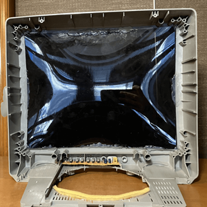
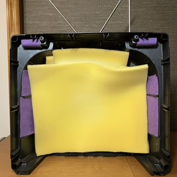
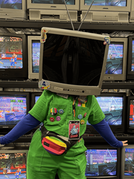
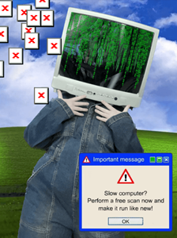
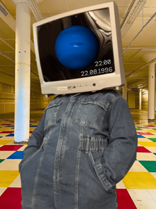
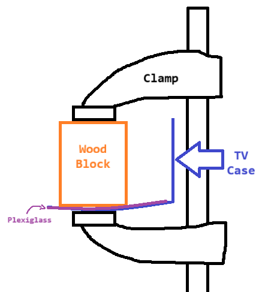

TV Head
| Origin | Original |
|---|---|
| Year Finished | 2023 |
| Status | Special |
Table of Contents
Intro
Who doesn't love a good TV Head? There are at least two TV head characters big in fandom right now so!
I wore this to a convention for the first time in 2025 and it was an absolute head turner. I personally don't really consider this a cosplay as this isn't really a character, its more akin to a fursuit kind of? My TVsona? Regardless still a costume of sorts that I wear for fun on rare occasions.
This page will also function less as a document of my build process like my other cosplays, and more as an exhaustive resource to fellow TV head fanatics that want to make their own. I'll still share my process (to the best of my memory) but I want to provide all of the knowledge I have gathered in one easy place!
Photos
{kind=link}

{kind=link}

{kind=link}

{kind=link}
{kind=link}

{kind=link}

Resources & Advice
My main tutorial reference was this tutorial by Vanna CoffeeCakey on Tumblr. I highly recommend skimming through it before reading my process as I assume you have read it and know the steps!
While CoffeeCakey and I both got our TVs at Goodwill, I'm not sure if I can recommend this. CRT (Cathode Ray Tube) Televisions are no longer made to my knowledge, so any that are still working are valuable relics of the past. The tube capacitor can hold a charge for decades that can kill you if you are not careful, not to mention they're made with other poisonous metals like lead and mercury. I did not test my TV before gutting it, and was lucky to have a father that knew the inner workings of a CRT to keep me safe. I say this not to deter you with guilt or fear, but for you to consider better options and enter this project with care. You may know someone with an old broken TV, or many say they source theirs from the local landfill. Maybe you can also find them sold for parts on secondhand markets like Ebay and Facebook Marketplace!
If you're still worried to death about the hazards, Phantom Ridicule on Instagram has a highlight and pinned video on their tips for disassembling a CRT. The long and short of it is, treat it with the utmost caution, don't break the screen or cut any wires if you don't have to, everything should come unscrewed, and avoid touching anything other than the screen.
If you would rather someone else make the TV head for you, there are at least two stores, PokuPoku Studio ("Authentic") and 60hz Creations (3D Printed) that sell custom TV heads, though for a pretty penny. There is also a foam pattern by Prime Props you can make yourself that looks rather realistic and is more budget friendly!
One of these days I would love to upgrade my TV with lights and shit, and theres two ways to go about it. The main one I see is the LED screen, which Minibitt has a free tutorial for. However, I prefer the LED matrix, and I've seen no better resource than Vivian at Rose Systems. They provide a walkthrough as well as their code, and are open to one-on-one help.
My TV Head Process
As mentioned in the previous section, I sourced my TV from Goodwill. I've seen CRT TVs at other thrift stores once in a blue moon, but none in the right size or as cheap as at Goodwill. My TV has a 19in screen (measured diagonally), which is kinda big I would definitely not go any bigger, in fact I'd say go smaller if you can. With the help of my father, we took out the tube and disposed of it. I saved a little bit of the circuit board used for the controls so I could maintain the clicky buttons and AV ports. That was the easiest part!
The Main Reason I write this whole section is because putting in the plexiglass sucked. After cutting it with a circular saw, plastic protective film stays on when cutting by the way, the edges were very scraggly and I didn't bother to sand them smooth. I also cut it Slightly Too Small so I had to very very carefully center it. It was really hard to measure how big I needed it man! The window tint was a little rough around the edges on account of the scraggle. But the hardest part was gluing it in.

The CRT's tube is convex, and the TVs plastic will usually follow it. So I had to hold this plexiglass at two curves. To do so to the best of my ability, my dad had the genius idea of using some spare wood blocks and quick grip clamps. The wood was needed to get down around the shell. Have a shitty diagram to try and understand the method.
It wasn't perfect, I have a bit of gapping in one spot, glue got everywhere, and despite using JB Weld for Plastic, I fear one day the screen will pop out and everything will suck. But I persevere.
After that though I was scott-free! I just needed to pad the shoulders and inside. Internally I kind of just haphazardly threw in some chunks of high density foam and called it a day. For the shoulders I shoved in some spare styrofoam. One day I may put some proper padding but who give a shit.
Accessories
I decided to cover the ventilation with purple felt for a little more personality, but also I probably should have used a more breathable fabric cus it gets a little humid in there.
I used masking tape to cover the Sylvania branding with my pronouns, and foam tape to stick on stickers cause I'm scared of commitment and wanted a lil more pop to them. I also found some antennae and stuck those on top!
I salvaged a wire from the CRT, attached a safety pin to one end and a lamp plug replacement on the other to make a cord tail! The wire was bendable so I formed it into a springy coil.
FAQ
Is that a real TV?
Yes, it is a Sylvania model 6419TEY.
Can you see?
Not perfectly but better than some of my other cosplays. It's dark, fine details are lost, and my field of view is slightly limited since the TV rests on my shoulders, but I can navigate a crowd on my own no problem.
Can you hear?
Yes, perfectly fine, but you cannot hear me! I have to either rely on others speaking for me or using my limited ASL and general gestures to communicate with people.
Is it heavy?
Only a little, like 5 pounds. Carrying it with my hands for extended periods can be awkward and straining, but on my head its not that bad. Just a little bit of shoulder pain.
Spatial awareness?
I have admittedly bonked some people, mainly from leaning forward or to the side. It's inevitable. :(